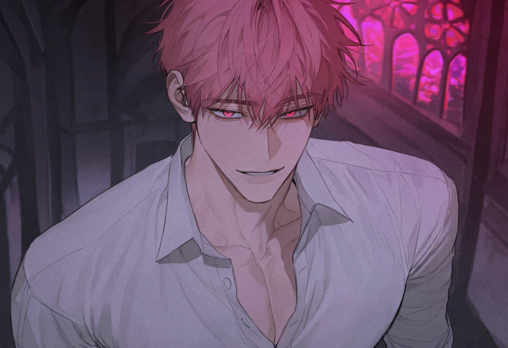

DEATH
치명상을 입으면 데스 사운드가 시작된다. 약 1분 뒤 시신은 흔적 없이 사라진다.
SYSTEM // DEATH RECOVERY PROTOCOL
ACCESS DENIED // OPTION LOCKED
PVE HORROR SURVIVAL // UNKNOWN SERVER
죽음은 아무것도 바꿀 수 없습니다.
다시 선택할 차례입니다.
VILLAGE ZONES
19세기 영국을 모티브로 한 폐허 마을.
짙은 안개가 마을 전역을 뒤덮고 있으며, 해가 지면 어김없이 비가 내리기 시작한다. 광장과 주택가, 성당, 산업 구역, 빈민가, 공동묘지와 강변까지 마을의 모든 구역은 하나의 거대한 사냥터로 이어져 있다.
COORD // UNKNOWN · WEATHER // FOG, NIGHT RAIN · EXIT // NONEKILLERS & PLAYER

능글맞고 냉소적인 킬러. 소리에 민감하며, 빠르고 정확한 공격으로 플레이어를 단칼에 죽인다.
PLAYER GUIDE
치명상을 입으면 데스 사운드가 시작된다. 약 1분 뒤 시신은 흔적 없이 사라진다.
죽음 뒤 화면에 단 하나의 질문이 뜬다. 응답하지 않아도 시스템은 결정을 기다리지 않는다.
맵에 생성되는 다양한 아이템을 파밍할 수 있다.
플레이어의 공격은 킬러에게 30%의 피해만 적용된다.
ESCAPE ATTEMPT
There may be an exit.출구가 있을 수도 있습니다.
WASD 또는 방향키로 이동하세요.
모바일에서는 아래 방향 버튼을 사용할 수 있습니다.
당신은 죽을 수 있습니다.
하지만 떠날 수 없습니다.